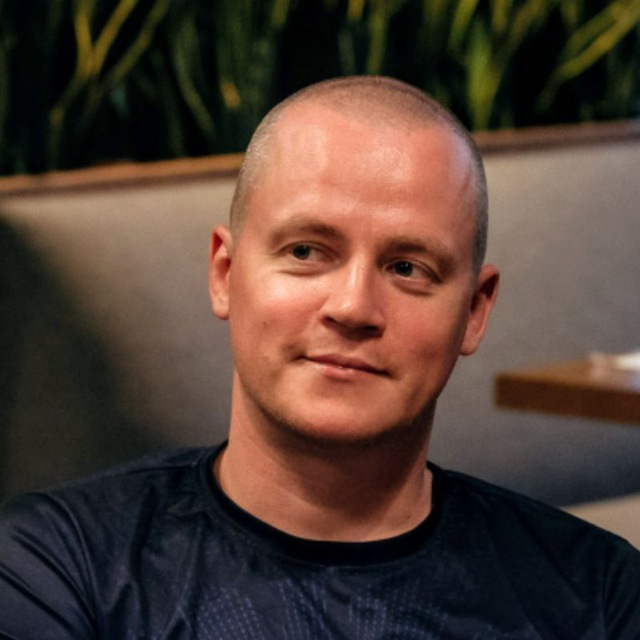

Пиков Виталий Александрович
Эксперт в области ИТ, информационной безопасности и преподаватель
26 лет в ИТ, более 10 лет преподавательской работы. Заслуженный доцент РосНОУ. Авторизованный преподаватель «Группы Астра» с правом проведения курсов по ОС Astra Linux Special Edition 1.8. Руководитель направления обучения по РБПО в НОУ ДПО «УЦБИ «МАСКОМ».
Авторские лекции и курсы
Лекции, курсы и справочники собраны как отдельные учебные порталы или разделы общих сайтов с материалами, презентациями и дополнительными ресурсами.
Введение в ОС Astra Linux SE 1.7
Обзор ОС специального назначения: продуктовая экосистема «Группы Астра», версии, архитектуры, уровни защищённости и базовый интерфейс.
МАСКОМAstra Linux: экосистема и уровни защищённости
Подробный разбор продуктовой линейки, нумерации обновлений и трёх режимов защищённости — базового, усиленного и максимального.
МАСКОМФормальные модели безопасности ОС
Дискреционная (DAC), мандатная (MAC) и ролевая (RBAC) модели разграничения доступа, модель Белла-ЛаПадулы и архитектура подсистемы защиты.
МАСКОМБезопасная настройка Astra Linux 1.7 / 1.8 и ОС Linux (hardening)
Систематический разбор трёх документов ФСТЭК России: рекомендации по Linux 2022 и согласованные методические рекомендации по Astra Linux 1.7 и 1.8. С чек-листами для АРМ и сервера, 16 sysctl-параметров, 6 кейсов «найди недочёт», 32-пунктовый чек-лист готовности.
МАСКОМБезопасность ОС Windows
Архитектура подсистемы безопасности (LSA, SRM, SAM), штатные защитные механизмы, BitLocker и EFS, антивирусная защита и политики обновлений.
МАСКОМАрхитектура ЭВМ и аппаратная безопасность
Принципы фон Неймана, Гарвардская архитектура, side-channel атаки, Spectre и Meltdown, TPM и Secure Boot, отечественные платформы.
МАСКОМKOMRAD Enterprise SIEM 4.5
Обзор отечественной SIEM от АО НПО «Эшелон» и практика на VirtualBox-стенде: установка на Astra Linux 1.7/1.8, подключение Windows 10 как источника событий, WMI-агент, 6 ГОСТов по мониторингу и три варианта практики.
Сертификация средств защиты информации
Нормативная база ФСТЭК и Минобороны, процедура сертификации, уровни доверия (1–6), требования к разработке СрЗИ.
МАСКОМЛицензирование в сфере ТЗИ
Получение лицензии ФСТЭК: ФЗ-99, постановления Правительства РФ № 79 и № 171, лицензионные требования, сроки и типичные ошибки соискателей.
МАСКОМПодразделения ТЗИ и их функции
Организация работы подразделений ТЗИ: требования Указа Президента РФ № 250, ФСТЭК и ФСБ, типовая структура и взаимодействие с регуляторами.
МАСКОМДень I. Риски ИБ, безопасность ЗО КИИ, инциденты
Полный учебный день программы профессиональной переподготовки: основы управления рисками ИБ (ГОСТ Р ИСО 31000-2019 и ГОСТ Р ИСО/МЭК 27005-2010), эксплуатация защищённых ИС и значимых объектов КИИ (187-ФЗ с изменениями 2025 г., приказы ФСТЭК России №№ 235, 239, 117 и ФСБ России), планирование работ по ТЗИ и управление компьютерными инцидентами (ГосСОПКА, ГОСТы серии 597XX). 5 лекций × 1,5 ак. ч, ≈100 слайдов.
МАСКОМДень II. Объекты КИИ: угрозы, меры, уязвимости
Глубокое погружение в безопасность объектов КИИ: оценка угроз (методика ФСТЭК России от 05.02.2021, БДУ ФСТЭК), модель нарушителей (Н1–Н4), структура модели угроз с практическим кейсом, требования к мерам по приказам №№ 235 и 239 (с уровнями доверия СрЗИ, СУБД, виртуализации), порядок выбора мер с практическим заданием, классификация уязвимостей и оценка критичности по методике ФСТЭК России от 30.06.2025. 5 лекций × 1,5 ак. ч, ≈115 слайдов.
Техническое задание (ТЗ): проверяемые требования и встраивание РБПО
Как писать ТЗ, которое можно реализовать и принять: ГОСТ 19/34, атомарные требования и ПМИ. Встраивание РБПО по ГОСТ Р 56939-2024 как несущая ось «требования → архитектура → модель угроз → выявление → доработка», артефакты SAST/SCA/SBOM/фаззинга и приёмочный комплект.
МАСКОМПодготовка к сертификации процессов РБПО (Приказы №240 и №230 ФСТЭК России)
Полная методика подготовки изготовителя СрЗИ к сертификации по ГОСТ Р 56939-2024: дорожная карта, 25 регламентов и планов по процессам 5.1-5.25, безопасный компилятор C/C++ по ГОСТ Р 71206-2024, проверка по IDEF0 и AppSec.Table.Top.
МАИКомпозиционный анализ ПО (КАПО)
Управление цепочкой поставки сторонних компонентов: проект ГОСТ Р, SBOM в формате CycloneDX, требования к инструментам анализа уязвимостей и лицензий.
МАИСтатический анализ безопасности приложений (SAST)
Принципы статического анализа кода, классы уязвимостей (CWE, OWASP), интеграция в CI/CD, отечественные и зарубежные инструменты, требования РБПО.
МАИПроверка безопасности приложения (процесс №19)
Нефункциональное тестирование по ГОСТ Р 56939-2024: ручной направленный анализ кода. 11 классов уязвимостей, 6 реальных кейсов и чек-лист на 38 пунктов.
МАИАрхитектурный анализ. Формирование и предоставление ППК ФСТЭК России (процессы №6, №7, №16, №17)
Полный курс по практикам РБПО за пределами фаззинга и статанализа кода: поверхность атаки, 9 техник анализа, 6 архитектурных кейсов, формирование Перечня программных компонентов и предоставление в ФСТЭК России.
Технологии хакеров и оценка защищённости информационной инфраструктуры
Авторский курс по методологиям атак и пентестированию: 5 лекций + практическое занятие на Kali Linux и Metasploitable 2. Регуляторика ФСТЭК России, БДУ ФСТЭК, отечественные инструменты, статьи 272–274.1 УК РФ, методология PTES.
МАСКОМСтатический анализ ПО + PVS-Studio (3 дня)
Курс ПВС СТАТ по ГОСТ Р 71207-2024. Принципы статанализа, практическая работа с PVS-Studio, интеграция в CI/CD, организация процесса по новому ГОСТу.
МАСКОМТестирование на проникновение, базовый, 5 дней (МАСКОМ-ПЕНТЕСТ-01)
Базовый курс по оценке защищённости периметра ИИ для руководителей ИБ, аудиторов, системных администраторов. Нормативная база ФСТЭК России, методологии пентеста, отечественные инструменты.
МАСКОМСпециалист по тестированию на проникновение, углублённый, 10 дней (МАСКОМ-ПЕНТЕСТ-02)
Углублённый курс для практикующих пентестеров, специалистов SOC и DevSecOps: 12 модулей, OWASP Top 10, реверс-инжиниринг, обход EDR, постэксплуатация Active Directory, итоговая аттестационная работа. Отдельная подробная посадочная.
МАСКОМФаззинг-тестирование для разработки безопасного ПО (М-ФАЗЗИНГ)
Курс по динамическому анализу для разработчиков СрЗИ, экспертов органов сертификации и DevSecOps. AFL++, libFuzzer, Sydr-Fuzz, фаззинг компилируемых, веб- и системных языков по ГОСТ Р 56939-2024 (процесс №11).
Проектирование информационных систем
Курс-путеводитель по курсовому проекту: концептуальная модель, ER-диаграмма, нормализация, физическая БД, проверка качества и типовые ошибки.
МАИ · кафедра 304Методика формулирования тем ВКР
61 слайд, 11 тематических блоков, 5 чек-листов и 10 разборов типичных ошибок при выборе и формулировке темы выпускной работы.
СправочникЛицензии SPDX на русском с вердиктами
Дословный перевод официальных текстов SPDX и черновые вердикты пригодности для коммерческих проектов 🟢🟡🔴 — разрешения, требования, ограничения.
Обо мне
Образование, профессиональные переподготовки, сертификаты и публичная экспертиза.
Образование
- Высшее — Тамбовский военный авиационный инженерный институт, специальность «Автоматизированные системы обработки информации и управления».
- Заслуженный доцент Российского нового университета (РосНОУ), преподаватель высшей школы.
Профессиональные переподготовки
- 2017МГТУ им. Н. Э. Баумана — «Информационная безопасность»
- 2019«Противодействие иностранным техническим разведкам»
- 2020«Педагогика профессионального обучения и образования»
- 2021«Техническая защита информации» (ТЗИ)
- 2022«Практическая психология»
Сертификаты и звания
- Авторизованный преподаватель «Группы Астра» — Astra Linux Special Edition 1.8
- Microsoft Certified: MCT, MCPS, MCSA, MCTS
- Награды и звания Минобороны России
- Автор более 40 научных публикаций
Конференции и форумы
- Positive Hack Days Fest 2
- Национальный форум информационной безопасности «Инфофорум»
- Международный военно-технический форум «АРМИЯ»
- Международная выставка InfoSecurity Russia
- Международная научная конференция «Цивилизация знаний: российские реалии» (РосНОУ)
Связь
По вопросам лекций, курсов и консультаций в области информационной безопасности.